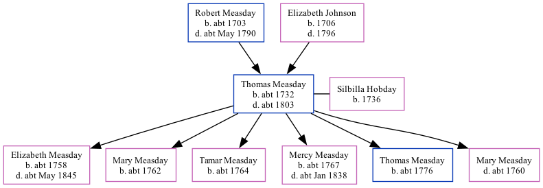

Thomas Measday c1732 - c1803
[ Home ] | [ Calendar ] | [ Surnames Index ] | [ Family History ]The child of Robert Measday and Elizabeth Johnson, Thomas Measday, the 5 times great-grandfather of Nigel Horne, was born in Stodmarsh, Kent, England c. 1732, was baptized there on Feb 10, 1733 and also married Silbilla Hobday (with whom he had 6 children: Elizabeth, Mary, Tamar, Mercy, Thomas and Mary) there, on Apr 11, 17572. In 1757, he lived at his birthplace4 which is where he died c. 18031. He was buried there at St Mary's Church on Apr 28, 18031,2,3.
Parents
- Robert was born c. 1703
- Elizabeth was born in 1706
Children
- Elizabeth was born c. 1758
- Mary was born c. 1762
- Tamar was born c. 1764
- Mercy was born c. 1767
- Thomas was born c. 1776
Citations
- England, Select Deaths and Burials, 1538-1991 Ancestry.com Operations, Inc.
- Familysearch.org (www.familysearch.org)
- Kent, Canterbury Archdeaconry Burials - Findmypast
- England, Select Marriages, 1538–1973 Ancestry.com Operations, Inc.
Media
Kent, Canterbury Archdeaconry burials 1538-1988 - GBPRS/CANT/D/95567320
England Marriages 1538-1973 - R_848618806
Family Tree
Generated by Ged2Site. Last updated on Jul 20, 2025